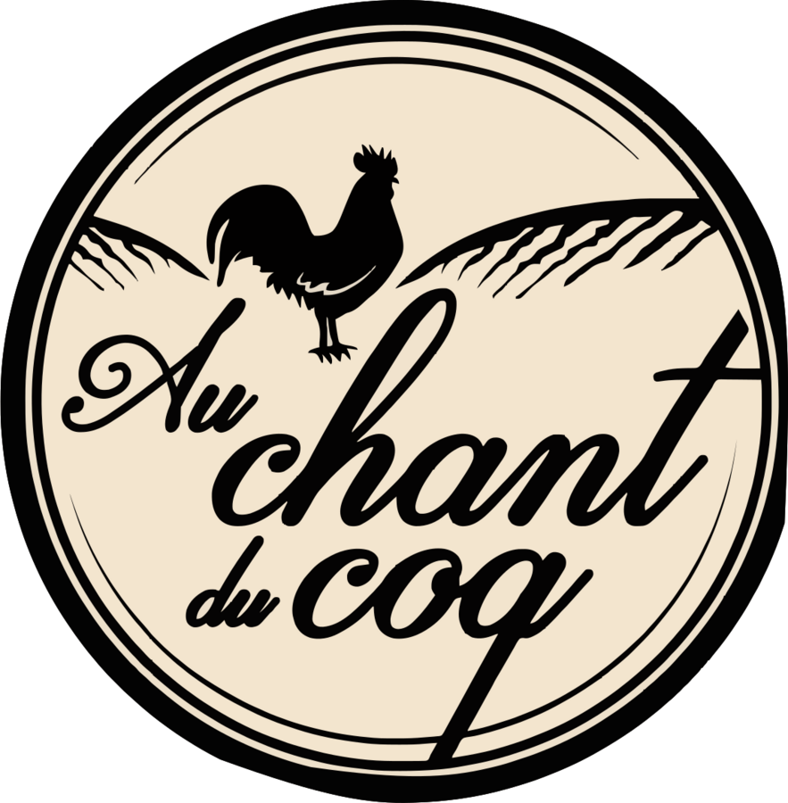
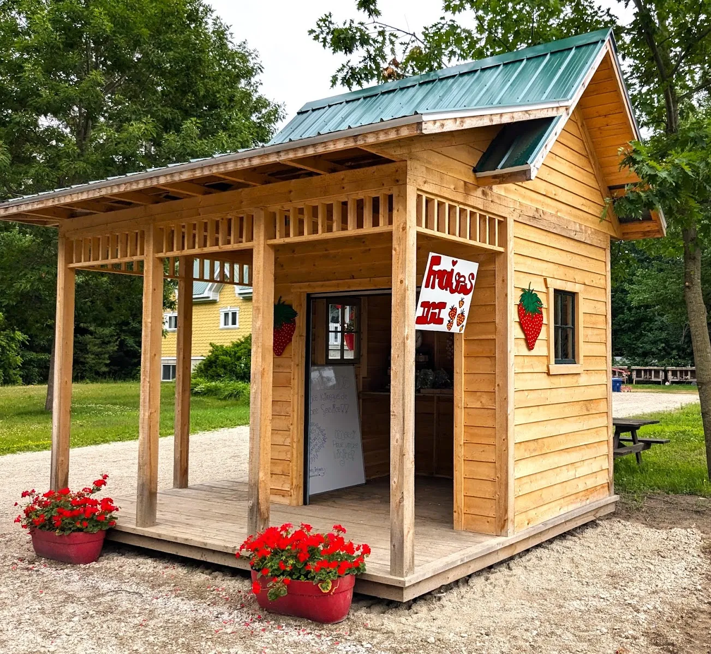
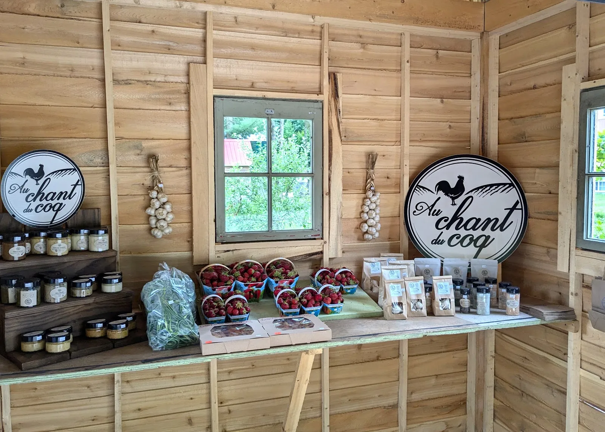

On cultive l'ail et on se spécialise dans la transformation de produits gourmands : ail noir, aïolis et autres trouvailles pour relever vos plats.
— Éric Ferron, Au Chant du Coq
Commander nos produitsNotre spécialité, préparée à partir de l'ail cultivé à la ferme. Formats à confirmer*.
Des aïolis préparés à partir de notre ail. Saveurs offertes : liste à venir*.
L'ail cultivé à la ferme. Disponibilité selon la saison*.


Plus de 4 500 personnes suivent nos récoltes et nos nouveautés sur Facebook. Ce site rassemblerait au même endroit nos produits, nos points de vente* et la façon de commander.
« Trois belles poules brunes. Prix très correct. Propriétaire- vendeur très sympathique. »
Appelez-nous ou écrivez-nous pour connaître les produits disponibles.
Appeler 819 384-2646 Suivre sur Facebook